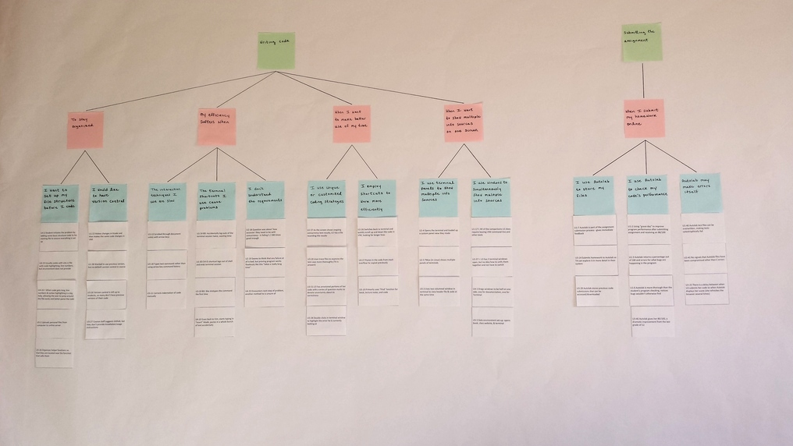
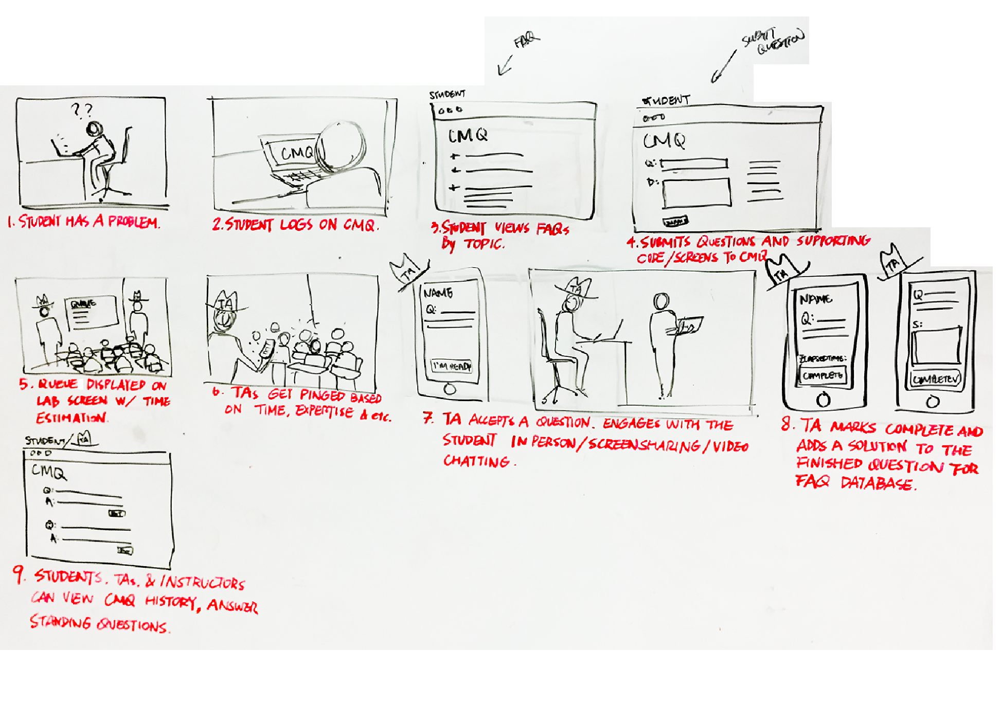
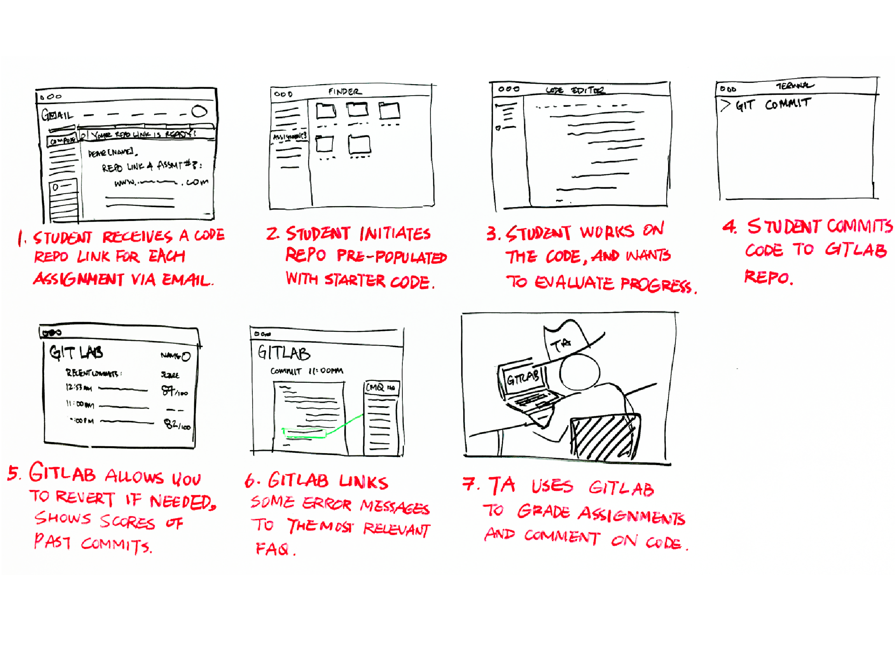
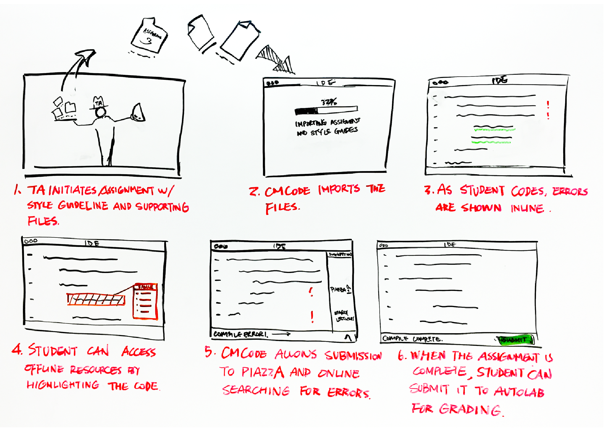

Programmer-Centered Research
The purpose of this project was to discover design opportunities by identifying breakdowns in the process that programmers use to develop code.
Project Overview
Course Title: User-Centered Research & Evaluation
Project Type: Team
Duration: 6 weeks
Methods: contextual inquiry, work models, affinity diagrams, data consolidation, visioning
Introduction
With the goal of designing methods/tools to improve programmers’ effectiveness, we followed the contextual design process to develop a deeper understanding of the programming process and how information flows among programmers and the systems they use.
Observation & Interpretation
We began by observing students completing programming assignments for a computer systems course at Carnegie Mellon University. Each of our observations (5 total) lasted for approximately one hour.
Next, my 4 teammates and I participated in several interpretation sessions. During these sessions, each observer recounted the events that transpired during his/her observation session while other team members repackaged key information into notes containing insights, sequence models, and flow models.

Data Consolidation
Affinity diagrams offer an effective way to organize data and ideas. This step of the process allowed us to more easily visualize the essence of the data and uncover persistent issues.
Sequence Consolidation
The goal of sequence consolidation is to create a set of procedures that describe all of the collected sequences. This step allowed us to obtain a more complete picture of the users’ intents and the processes that they employ during task performance.
Flow Consolidation
To create a single, consolidated flow model we began by merging all of the objects with the same title. For each new object, we then added all of the responsibilities and communication paths from all its representatives in the original models. Finally, we revised the new model to reduce synonymous items (objects, responsibilities, or communication flows).
Visioning
This final step involved (1) brainstorming design ideas grounded in data, and (2) telling a story about how the users’ work will change when a new system is introduced.
To effectively illustrate how our three candidate solutions might address the problems identified, we created a series of storyboards.
V1: TA Queuing System
The consolidated sequence model revealed the existence of long periods where students wait for TA feedback. Furthermore, any knowledge generated from student-TA interactions is lost after the session. We propose a system that not only helps students queue for TAs, but stores the information obtained from the help session in an interactive FAQ document.
V2: Assignment Code Repositories
Our affinity diagram communicates that students want to access past versions of their code, share it with TAs, and understand how past code submissions were evaluated by AutoLab. To address these user needs, we propose a system that creates repositories for each assignment. Students receive starter code when they check out the repository. Once code changes are committed, they automatically receive feedback from Autolab (which is then stored and indexed).
V3: Integrated Development Environment
Our consolidated flow model revealed distant links between the code editing software students use and important reference materials (e.g. external resources, style guidelines, assignment details, etc.). We therefore propose an integrated development environment that helps users identify errors, find useful resources, and submit questions to peers. Notably, this application would reduce the amount of switching between different windows that all contain information needed to perform the programming task.
More Projects

Classroom Discussion Application
Glucose Control System
Public Restroom Redesign
@2017 by Aubrey Henderson. All rights reserved.